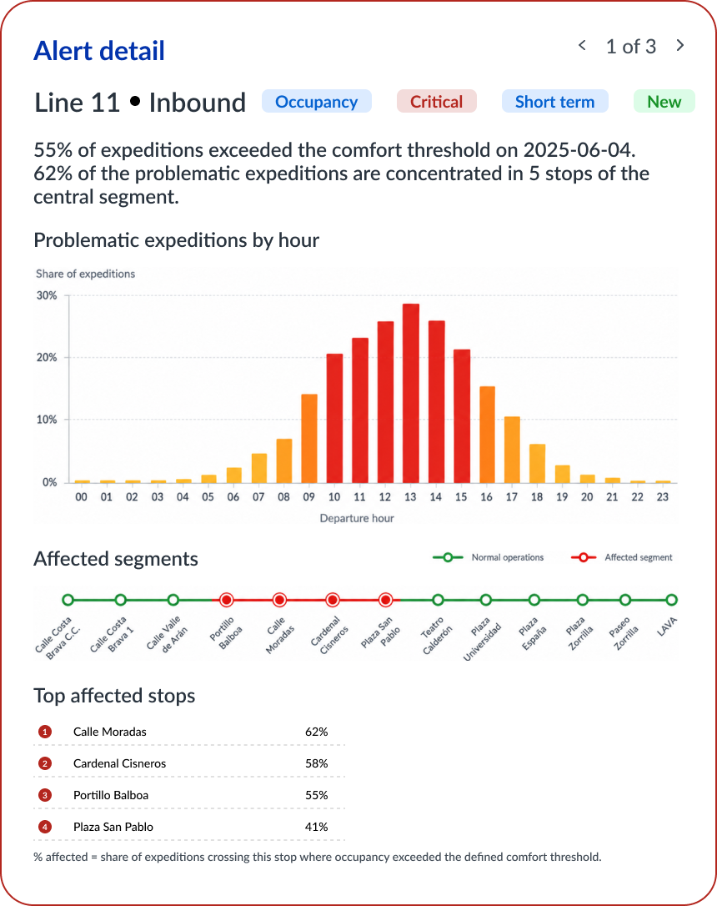
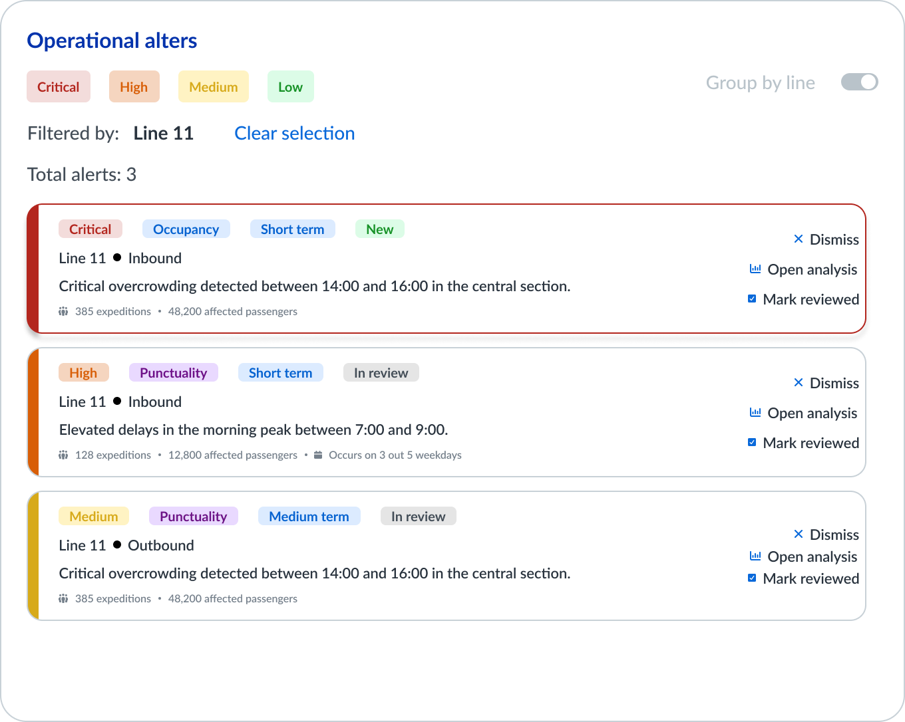
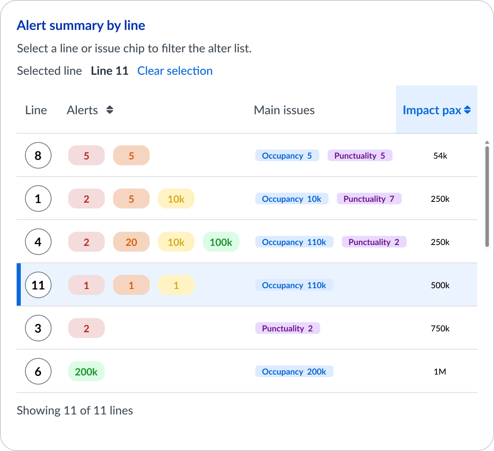
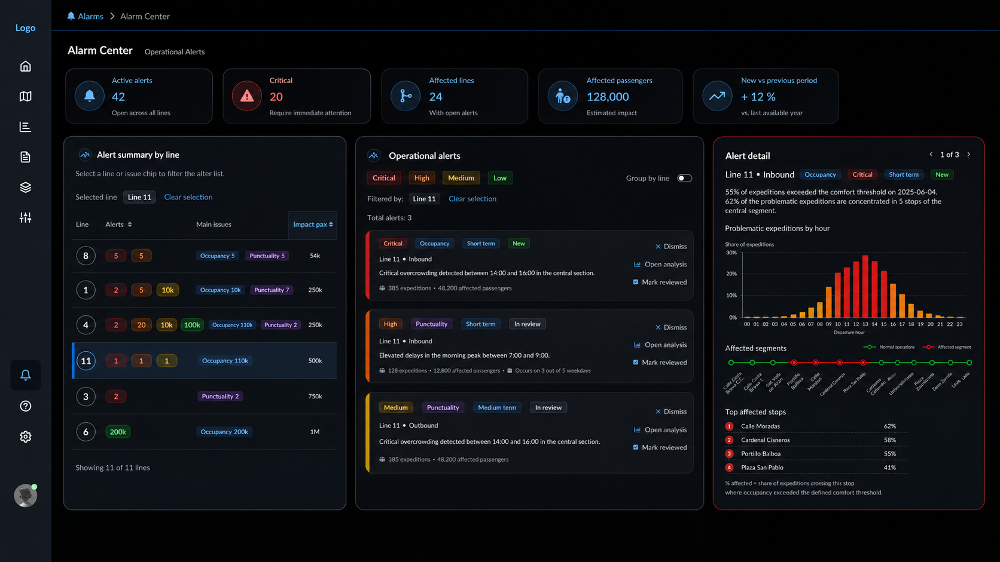

Product vision and functional ownership
I define and validate product functionalities, structure roadmaps, prioritise backlogs and translate business ambition into clear execution.
I help teams turn complex data, mobility challenges and business needs into clear product experiences, scalable workflows and better decisions.
My career sits at the intersection of Product Management, Product Design and Frontend Engineering. I care about structure, feasibility, clarity and the details that make a product actually work.
Built product experiences focused on location intelligence, mobility analytics and client-facing demos.
Led interface definition, design alignment and modernization work for confidential operational products.
Own functional product direction across data-driven products, from discovery and backlog to releases and demos.
Some of my work has been developed in confidential corporate environments. This portfolio uses anonymised company references, generic product names, recreated visuals and fictional data where needed.
The product thinking, process, decisions and outcomes are based on real work, but no confidential interfaces, client data or internal documentation are shown.
I can move across the full product conversation: business goals, user experience, technical feasibility, roadmap, delivery and implementation quality.
I define and validate product functionalities, structure roadmaps, prioritise backlogs and translate business ambition into clear execution.
I design journeys, dashboards, maps, forms, workflows and decision-support experiences for products with dense data and multiple user needs.
My frontend background helps me work closely with developers, challenge feasibility and design solutions that are realistic to build.
A curated set of anonymised case studies showing product management, product design, data visualization and delivery alignment.
Product management across a growing ecosystem of data-driven products for location intelligence, mobility analytics, transit performance and shared mobility operations.
An anonymised WiseTransit case study showing how alert summary, operational triage and alert detail can work together as a drill-down flow for transport network management.
A SaaS product helping retail teams transform mobility, population, competition and sales data into decisions about store location and commercial strategy.
A recreated case study about modernising a complex enterprise mobility interface, aligning operational UX, requirements and frontend architecture.
Product management across a data-driven SaaS ecosystem, creating clarity between product vision, UX decisions and development execution.
The platform integrates products with different use cases but a shared goal: helping organisations turn complex mobility, population, retail and operational data into better decisions.
Supports retail site planning, catchment analysis, sales forecasting and competition analysis.
Generates origin-destination matrices and transport demand indicators from anonymised mobile data.
Analyses presence, footfall, population profiles and behavioural patterns across geographic areas.
Combines ticketing, vehicle location and passenger counting data to monitor demand and service quality.
Helps plan and manage shared mobility services through demand forecasting and operational optimisation.
Creates shared product logic, documentation, workflows and demo narratives across the ecosystem.
The opportunity was not just to improve isolated screens, but to create a clearer product operating model across products.
Product needs, functional decisions and priorities were spread across different workstreams, making shared understanding harder.
Client-facing demos required significant preparation effort because flows and key messages were not always reusable.
Different products had evolved with different interaction patterns, levels of detail and design logic.
My ownership is mainly product and functional, not purely technical or commercial. I work across roadmap, discovery, requirements, documentation, client understanding and demos.
I introduced a more structured product design flow to make early product thinking more consumable, actionable and aligned before implementation.
Clarify product area, business objective, user need and functional scope.
Define who the user is and what they are trying to achieve.
Identify where the current flow is unclear, slow or inconsistent.
Translate the PM/PO perspective into a brief UX/UI can consume.
Bring prototypes closer to the expected development outcome.
Define how the redesigned flow should be evaluated after implementation.
The work produced practical outputs that improved product clarity, delivery expectations and demo quality.
The impact is mainly reflected in product clarity, team alignment, handoff quality and delivery confidence.
Clearer documentation, user stories, product flows and decision structures reduced ambiguity between product, UX/UI and development.
Reusable demo narratives and clearer product flows made it easier to prepare client-facing presentations and explain platform value.
The product design flow helped teams express context, personas, friction points and expected outcomes in a more usable format.
Bringing prototypes closer to development expectations reduced interpretation gaps and improved product handoff quality.
A good product flow is not only a set of screens. It is a shared understanding of the user, the problem, the business goal, the technical constraints and the decision the product needs to support.
An anonymised WiseTransit case focused on operational incidents. I used recreated visuals and fictional data to show the interaction model without exposing the original product.
Transport teams can have many lines, directions and periods to review. The question is not only “what happened?” but “where should I look first?”.
The Alarm Center was structured as a simple drill-down: start with the affected lines, move into the alerts for a selected line, and then open the evidence behind one alert.
The main user is a transport planning or service quality supervisor. This person does not need another isolated dashboard; they need a clear way to detect, prioritise and investigate issues.
Which line needs attention?
Which alert should I review first?
What evidence explains the issue?
Dismiss, review or open analysis.
This is the entry point. It lets the user compare lines and understand where incidents are concentrated before opening the alert list.

After selecting a line, the alerts become a working queue. Each card gives enough context to scan, compare and decide whether to open the detail.

The detail view explains why the alert matters. It brings together a short text summary and the evidence needed to understand the issue.

After defining the interaction model, I explored a darker interface direction to move further away from the original product look and make the concept feel more like an operations workspace.

The relevant design work here is not the navigation or the surrounding product chrome. It is the drill-down logic between three modules: line summary, alert list and alert detail. Together, they help the user move from a broad operational signal to a specific issue and a next action.
Before screens, I clarify what the user needs to decide and what information supports that decision.
I turn dense data, workflows and constraints into clear flows and information architecture.
I look for reusable patterns that improve consistency and scalability across products.
Charts, maps and KPIs need to be part of a decision journey, not isolated visual elements.
My technical background helps me design with business value, user needs and engineering constraints in mind.
Strong product outcomes start with shared context before design and implementation are fixed.